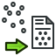

El módulo de Puntos está creado para darte herramientas específicas para trabajar con nubes de puntos. Está aún en desarrollo.
Estas herramientas ya están disponibles:
-  Import Point Cloud: importará coordenadas para puntos 3D desde un archivo de texto
-
 Export Point Cloud: exportará coordenadas para puntos 3D a un archivo de texto
Export Point Cloud: exportará coordenadas para puntos 3D a un archivo de texto -
 Polygon Pick: para hacer
Polygon Pick: para hacer
{kind=link}
Por el momento, el entorno de trabajo de nube de puntos no tiene rutinas automáticas para tratar con los puntos importados.
Pero al enlazar con la biblioteca de nube de puntos (la versión de Windows de FreeCAD ya tiene esa capacidad), podrías
usar los comandos de python para procesar sus datos, vea la discusión aquí y aquí (sub forum alemán).
Otra discusión interesante aquí (English Help-Forum).
Por supuesto, también podría usar el ambiente de trabajo Draft dentro de FreeCAD y conectar los puntos usando elementos Draft.
El uso del "punto final" del modo de ajuste asegurará el ajuste a los puntos.